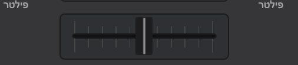

הדגמה אינטראקטיבית
קרוספיידר: גרור ותראה מי נשמע
A
100%
B
0%
AB
A משמאל, B מימין, כמו בתוכנה. בהדגמה: באמצע שני הדקים נשמעים במלואם. ב-VirtualDJ אפשר לבחור עקומות שונות בהגדרות.
יש שתי דרכים לשלוט מה הקהל שומע:
- פיידרי ערוץ (האנכיים): כל אחד שולט בעוצמה של דק אחד.
- קרוספיידר (האופקי): מעביר בין צד A לצד B. באמצע שומעים את שניהם.
במה להשתמש?
הרבה DJ-ים במועדונים משאירים את הקרוספיידר באמצע ועושים את המעברים רק עם פיידרי הערוץ ועם ה-EQ, כי זה נותן שליטה עדינה יותר. הקרוספיידר מעולה לחיתוכים מהירים ולסקראץ'.
עם עכבר קשה להזיז שני פיידרים בו זמנית, ולכן בלי פלטה הקרוספיידר נוח יותר: מזיזים פס אחד. לפי המדריך הרשמי, Alt+←/→ מזיזים את הקרוספיידר, ו-Alt+Backspace (Mix Now) עושה מעבר חלק אוטומטי לצד השני.
Curve
בהגדרות המיקסר אפשר לשנות את עקומת הקרוספיידר: עקומה חדה לסקראץ', עקומה רכה למעברים. אם אתה לא מוצא, ב-Settings חפש crossfader.